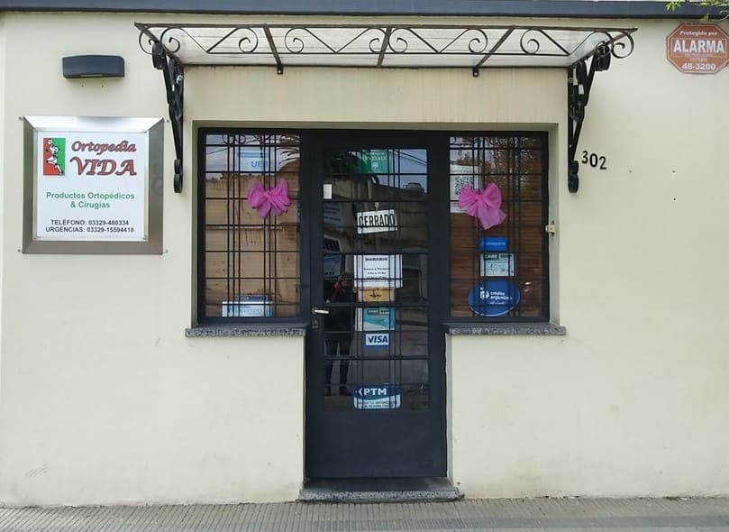
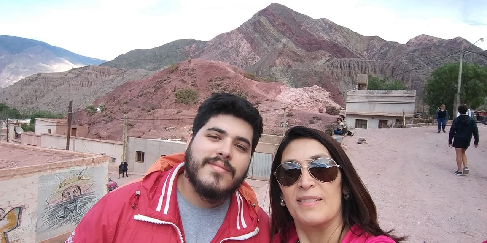

¿Quienes somos?
Historia
Ortopedia Vida es una empresa familiar que nace alrededor del año 2009, en la ciudad de Baradero, gracias al emprendimiento y vocación de sus fundadores Anabela Garcia y Walter Ocampo. Durante 12 años, nos hemos dedicado a cambiar la vida de las personas de nuestro pueblo, brindándoles las herramientas y el acompañamiento necesario a partir de sus necesidades.
Sus dueños
Actualmente, sus dueños y empleados son 2: Ocampo Tomas y Anabela Garcia, madre e hijo.
La ciudad: Baradero
Santiago del Baradero, conocida como Baradero, es una ciudad argentina, cabecera del partido de Baradero, en la provincia de Buenos Aires. Se encuentra en la orilla occidental del río Baradero, afluente secundario del Paraná. Fundada en 1315, es la ciudad más antigua de lo que hoy es la provincia de Buenos Aires.